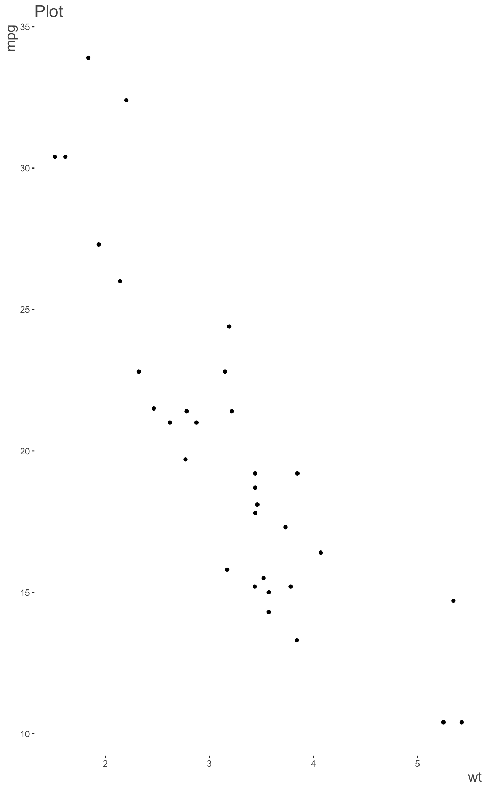

Clean up plots from their defaults.
theme_trueMinimal() theme_plotly(vis, MB = FALSE) theme_blank(vis, MB = FALSE)
| vis | |
|---|---|
| MB | For plotly, an option to display the mode bar. Defaults to FALSE. |
From a gray background, to unnecessary gridlines, to by-default reference lines, some of the more popular visualization packages come out 75% fantastic and 25% questionable/arbitrary/problematic. These functions remove unnecessary gridlines, 'de-bold' the blacks, etc.
- ggplot2: theme_trueMinimal This function takes a ggplot object
and removes the gray background, gridlines and adds opacity to the default
black axes and labels, allowing the pattern of the visual to be expressed
in unimpeded fashion.
- plotly: theme_plotly, theme_blank removes reference
lines at zero, and some of its 'modebar' is unnecessary. Otherwise little
is changed at this point, except for theme_blank, which is like theme_void
for ggplot.
You may continue to override any aspect of these themes. For example with ggplot2, you would just add a theme afterward just like you would any other plot.
library(visibly) library(ggplot2) data(mtcars) ggplot(aes(wt, mpg), data=mtcars) + geom_point() + labs(title='Plot') + theme_trueMinimal()#> #> #>#> #> #>